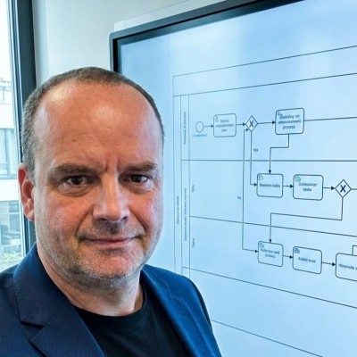

Byznys analýza & řízení požadavků
Workshopy, sběr a formalizace požadavků, specifikace, akceptace. Modelování procesů v BPMN.
Byznys architekt & analytik
Propojuji byznys a IT — od potřeby k dodání a adopci změny.
Architekt, analytik a konzultant se zkušeností s řízením portfolia projektů, rozvojem obchodních aplikací a tvorbou strategických dokumentů pro řízení ICT a digitální transformaci.

Jsem byznys architekt, analytik a konzultant s více než 15 lety praxe na pomezí byznysu a IT. Pomáhám organizacím převádět potřeby do jasných požadavků a specifikací, nastavovat governance a dotahovat změny až k reálnému dodání a adopci.
Mám zkušenost s řízením projektového portfolia v řádu desítek projektů, rozvojem CRM a reportingu, konsolidací datové vrstvy do podoby single source of truth a s tvorbou strategických dokumentů pro řízení ICT a digitální transformaci.
Zkušenost z organizací
Workshopy, sběr a formalizace požadavků, specifikace, akceptace. Modelování procesů v BPMN.
TOGAF a ArchiMate, analýza as-is/to-be, gap analýza, roadmapy a trasovatelnost na portfolio.
PPM a PMO, prioritizace pro vedení, jednotná metodika řízení (PMBOK), agilní i tradiční přístup.
Rozvoj obchodních aplikací a reportingu/BI, konsolidace datové vrstvy do single source of truth.
ITIL, COBIT, IT4IT a normy ISO/IEC — řízení, kvalita a kontrolní body výstupů.
Office 365 / Teams, procesy spolupráce, řízení dodavatelů, sourcing a výběrová řízení.
NAKIT, s. p. · Praha / hybrid
OSVČ · Plzeň & remote
Česko.Digital / Nezisk.Digital · online
H&B Group s.r.o. · Plzeň
Kooperativa pojišťovna, a.s. · Praha
Hledáte propojení byznysu a IT, podporu s architekturou, řízením portfolia nebo digitální transformací? Ozvěte se.